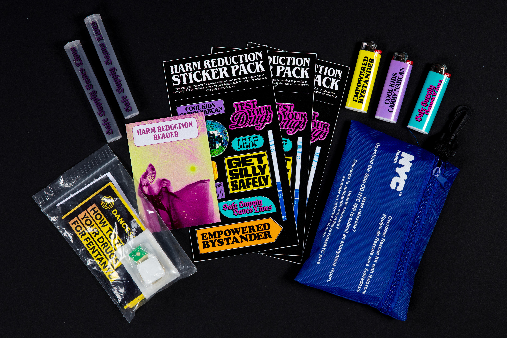
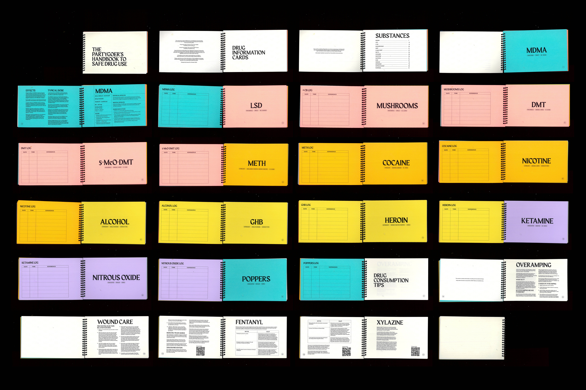
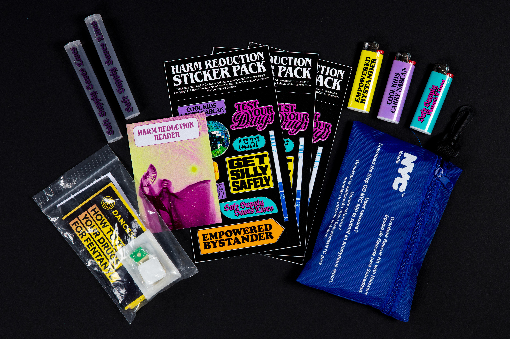
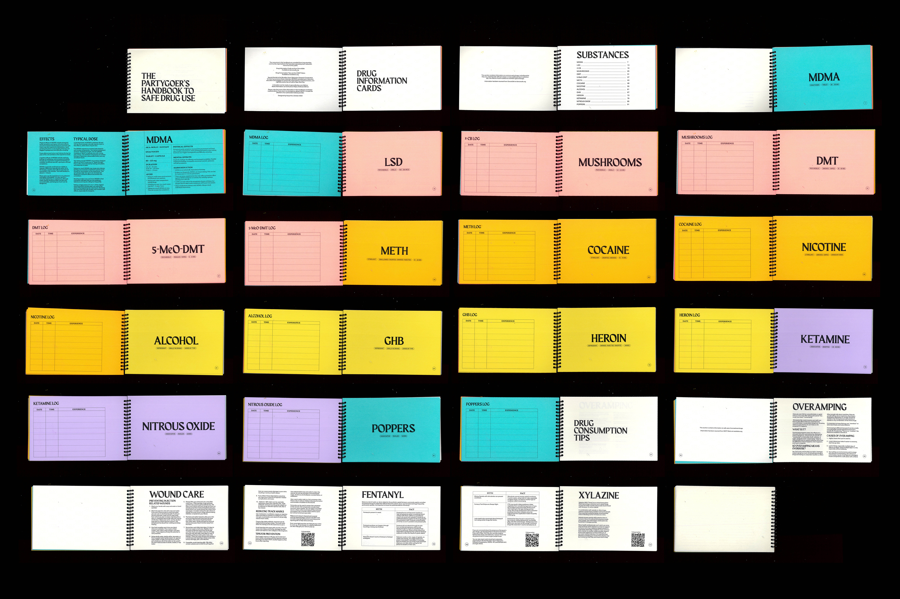

Test It Before You Ingest It: A Friendly Toolkit to Harm Reduction and Safe Drug Use
BFA Communication Design Thesis, Social Campaign
Test it Before You Ingest It is my BFA Communication Design thesis at Parsons School of Design.
It is the product of over a year of research, reporting, and making. The project is a range of
designed materials that together, constitute a primer on harm reduction for young recreational drug users.
By creating engaging entry-points to learn about harm reduction, striking a balance between
visually compelling aesthetics and educational content, the project aims to empower young people to have
informed pre-emptive conversations about staying safe and alive should they choose to experiment with drugs.
My end goal was to play a small part in fostering a community that believes in and advocates for the life-saving
potential of harm reduction as a practice.
Learn more about this project at
thesis.aaryakini.com
 


